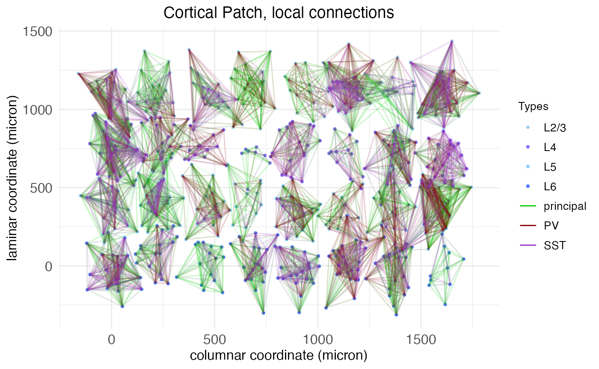
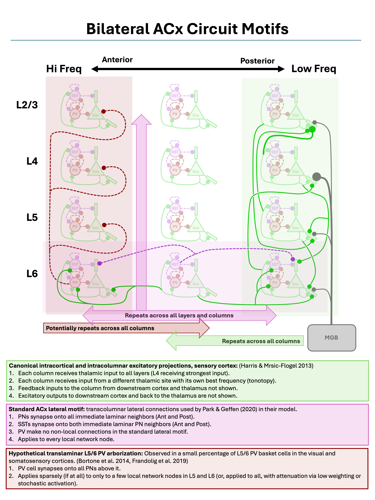
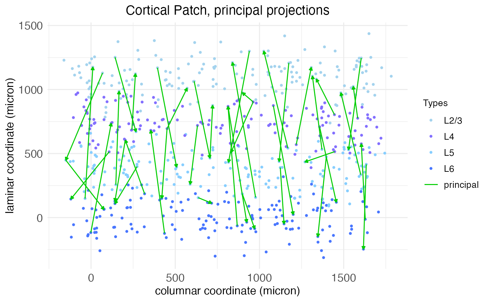
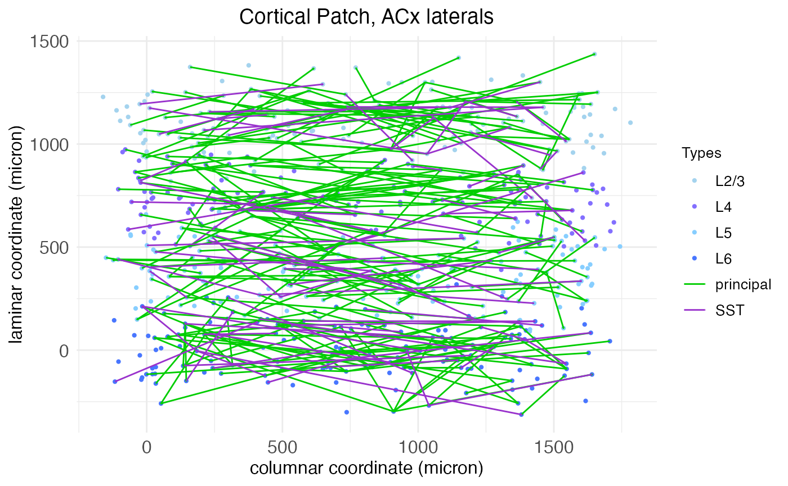
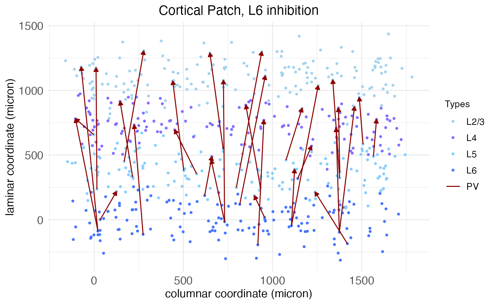

Network topology from circuit motifs
Michael Barkasi
2026-03-27
tutorial_network_topology.RmdIntroduction
The simplest mathematical models of neural networks are built from homogeneous McCulloch-Pitts neurons and scalar-weight connections between them. Biological neural networks, such as those in patches of cortex, are far more complex. They contain different types of neurons each with their own electrical behavior and spatially extended connections.
Computational neuroscientists standardly model biological neural networks as dynamical systems. The spatial growth-transform (SGT) models used in this package, based on the GT models of Gangopadhyay and Chakrabartty, are one such example. Instead of a one-dimensional weight between two homogeneous neurons, SGT models use a transconductance parameter, a temporal modulation factor, and a transmission velocity parameter to determine network behavior. Roughly, the transconductance parameter is the inverse of a traditional weight, while the temporal modulation factor allows for capturing the different electrodynamics of different neuron types at a single spatial point and the transmission velocity parameter allows for modeling the spatial propagation of signals between neurons.
SGT models thus allow for network topologies that not only capture connection strengths between neurons, but also the different types of neurons and their electrodynamics over time and space. A separate tutorial explains SGT models in more detail. This tutorial demonstrates how to build network topologies for these models from circuit motifs.
Initialize network
Let’s set up the R environment by clearing the workspace, setting a random-number generator seed, and loading the neurons package.
# Clear the R workspace to start fresh
rm(list = ls())
# Set seed for reproducibility
set.seed(12345)
# Load neurons package
library(neurons) Network topologies are held in a special class of objects, network, from the neurons package. A new network object can be created with the new.network function.
cortical.patch <- new.network()As with the neuron object class, the network object class is native to C++ and integrated into neurons (an R package) via Rcpp. The object initialized by new.network is a minimal “single node” network. In this context, “node” does not mean a single neuron, but rather a cluster of nearby neurons with local recurrent connections. For this tutorial, we will follow the node model of Park and Geffen (2020), which includes three distinct neuron types: excitatory principal pyramidal neurons and two inhibitory types, parvalbumin (PV) and somatostatin (SST) interneurons. These nodes are expected to be (approximately) fully connected, with cells of each type synapsing into cells of all other types.

The basic structure of a local network node, as modeled by Park and Geffen (2020).
At this low-level of structure, nodes are defined by neuron types, neuron type valence (1 for excitatory, -1 for inhibitory), node size (mean number of neurons per type), and local connectivity density (the average fraction of neurons in the node that connect to other neurons in the same node). At the highest level of structure, network objects are built from nodes arrayed into layers and columns, mimicking the structure of the cortex. Hence, these networks can be thought of as cortical patches.
With a network initialized, both low and high-level structure is set with the set.network.structure function. To capture the topology of the Park and Geffen node model, we will create nodes with three cell types (principal, PV, and SST), with a mean count of 10, 5, and 5, respectively. These three cell types (along with VIP interneurons) are pre-defined by the neurons package; the process of loading and setting cell types is discussed in the tutorial on SGT models. To mimic the major functional areas of the auditory cortex, we create a cortical patch with four layers (L6, L5, L4, and L2/3).
cortical.patch <- set.network.structure(
cortical.patch,
neuron_types = c("principal", "PV", "SST"),
layer_names = c("L6", "L5", "L4", "L2/3"),
n_columns = 8,
neurons_per_node = c(10, 5, 5)
)Notice that we chose to create a network with eight columns. Given the default spatial size parameters of the set.network.structure function, a patch with eight columns will be approximately the size of the auditory cortex in mice.
More specifically, the networks used by SGT models assign to each neuron a 2D spatial coordinate giving its location along the columnar and laminar axis. These coordinates are continuous and real-valued and are used in conjunction with the transmission velocity parameter simulate spike propagation. There is a physically meaningful unit attached to these coordinates: microns. Four parameters control the coordinates assigned to each neuron: column_width c_{\mathrm{width}}, layer_height l_{\mathrm{height}}, column_separation_factor F_{\mathrm{column}}, and layer_separation_factor F_{\mathrm{layer}}. A node is created for each combination of column integer-index c and layer l. Each node is assigned a coordinate \langle x_c,y_l\rangle: x_c = c \frac{c_{\mathrm{width}}F_{\mathrm{column}}}{2} y_l = l \frac{l_{\mathrm{height}}F_{\mathrm{layer}}}{2} Within each node, a coordinate \langle x_n,y_n\rangle is assigned to each neuron n by sampling from a normal distribution: x_n \sim \mathcal{N}(x_c, \frac{c_{\mathrm{width}}}{2}) y_n \sim \mathcal{N}(y_l, \frac{l_{\mathrm{height}}}{2}) By default, c_{\mathrm{width}} = 130.0, l_{\mathrm{height}} = 250.0, F_{\mathrm{column}} = 3.5, and F_{\mathrm{layer}} = 3.0.
The set.network.structure function not only sets the number of rows and columns and all spatial coordinates, but also initializes local recurrent connections within each layer. In the code above, the default connection density value of 0.5 was used, meaning each cell (in each layer) connects to approximately half the cells of each type.
The plot.network function will visualize a network object. By default, it displays only local recurrent connections within each node.
plot.network(cortical.patch)
Now we have a network of four cortical layers and eight columns, but with only local connections between neighboring neurons. Next, we will add long-range connections between layers and columns using circuit motifs.
Define and load motifs
A circuit motif, represented in the neurons package by special objects of class motif, is a predefined pattern of connections between layers and columns in a network. It is a recipe for connecting cells between nodes, based on cell type, pre and post-synaptic node coordinates (column and layer), and connection density (i.e., what ratio of cells in a pre-synaptic node project to what ratio of cells in a post-synaptic node).
Below we will define and load three canonical circuit motifs thought to characterize sensory cortex: (1) an intracortical and intracolumnar excitatory projection motif of principal columnar projections, (2) a lateral projection motif for cross-columnar communication in the auditory cortex, and (3) a translaminar L5/6 PV arborization motif for intracolumnar inhibition. These motifs are summarized in the figure below.

Three canonical sensory cortex circuit motifs, as described by Harris and Mrsic-Flogel (2013), Park and Geffen (2020), Bortone et al. (2014), and Frandolig et al. (2019).
As shown by the figure, these motifs are “columnar”, in the sense that they are defined relative to a single cortical column and repeated across all columns.
Principal columnar projections
The new.motif function initializes an empty motif object. Let’s initialize one to model the canonical intracortical and intracolumnar excitatory projections in the sensory cortex. These connections are largely what defines a “column” in the cortex, and thus they connect neurons in different layers while staying within the same column.
motif.pp <- new.motif(motif_name = "principal projections")Connections between layers can then be added to the motif using the load.projection.into.motif function. This function takes as arguments the motif object, the source layer name, and the target layer. By default, it generates excitatory projections between those layers with both pre and post-synaptic density of 0.5, meaning that (on average) half of the neurons in the source layer will send projections to the target layer, and (on average) each pre-synaptic neuron will connect to half of the neurons in the target layer. The ratio is “on average” because the function determines the number of pre and post-synaptic neurons by drawing from a Poisson distribution with mean equal to the number of neurons in the node times the density. This density can be modified via a fourth argument to the function. Here, for example, we load a projection with density 0.9 from layer L4 to layer L2/3 into our new motif:
motif.pp <- load.projection.into.motif(motif.pp, "L4", "L2/3", 0.9)We have increased the density of this connection from the default because layer 4 (the primary site of input from outside the cortex into the cortex) sends a plurality of its intra-cortical projections to layer 2/3. By default, the loaded projection is between excitatory (“principal”) neurons. Below we will show how the pre and post-synaptic cell types can be modified through additional function arguments. For now, let’s load sparse projections from layer 4 into the other layers:
motif.pp <- load.projection.into.motif(motif.pp, "L4", "L5", 0.25)
motif.pp <- load.projection.into.motif(motif.pp, "L4", "L6", 0.25)The column-defining principle projections also typically include recurrent loops between layer 2/3 and layer 5:
motif.pp <- load.projection.into.motif(motif.pp, "L2/3", "L5")
motif.pp <- load.projection.into.motif(motif.pp, "L5", "L2/3")Finally, these projections also include a feed-forward projection from layer 5 to layer 6, and a feedback projection from layer 6 to layer 4:
motif.pp <- load.projection.into.motif(motif.pp, "L5", "L6", 0.25)
motif.pp <- load.projection.into.motif(motif.pp, "L6", "L4", 0.25)With the complete principle-projection motif defined, we apply it using the apply.circuit.motif function. This function takes as arguments the network object and the motif object. It adds the connections defined in the motif to the network.
cortical.patch <- apply.circuit.motif(
cortical.patch,
motif.pp
)We can then visualize the new connections with the plot.network function, specifying the motif name to plot the connections defined by that motif.
plot.network(cortical.patch, plot_motif = "principal projections")
Note the arrow heads indicating the direction of the projection (pre vs post-synaptic neuron). These scale with the number of projects to plot, shrinking to accomodate more projections.
Auditory lateral projections
Within sensory cortex, cortical columns tend to respond to a single type of stimulus. For example, cortical columns in the visual cortex might have preferred edge orientations while columns in the auditory cortex prefer certain sound frequencies. More advanced cortical computations require integrating input from a range of stimuli (e.g., a range of edge orientations or sound frequencies), and thus there must be some mechanism of column cross-talk. This is thought to be accomplished by lateral connections between cells of the same layer, but different columns. For example, Park and Geffen (2020) propose that these lateral connections include excitatory projections from principle neurons out to cells of all types in adjacent columns and inhibitory projections from SST interneurons out specifically to principle neurons in adjacent columns. Thus, for this motif, we need to make use of the presynaptic_type and postsynaptic_type arguments of the load.projection.into.motif function to specify the relevant neuron types for each projection.
By default, load.projection.into.motif creates projections within the same column. To create lateral projections, we need to use the max_col_shift_up and max_col_shift_down arguments of the function to specify how many columns away from the source column the target column can be. For the purposes of this demonstration, we’ll set these to eight (the total number of columns in the network), meaning that projections can be made to any other column in the network. However, lateral projections are assumed to drop off quickly, and so when the apply.circuit.motif function is called, the density of lateral projections will be reduced in proportion to the column distance between source and target columns. Specifically, if n is the columnar offset of the target column from the source column, then the effective density of the projection will be reduced by a factor of 1/(n+1).
motif.ACxlat <- new.motif(motif_name = "ACx laterals")
# Add projection for each layer
for (layer in c("L2/3", "L4", "L5", "L6")) {
# Excitatory laterals
for (celltype in c("principal", "PV", "SST")) {
motif.ACxlat <- load.projection.into.motif(
motif.ACxlat,
presynaptic_layer = layer,
postsynaptic_layer = layer,
presynaptic_type = "principal",
postsynaptic_type = celltype,
max_col_shift_up = 8,
max_col_shift_down = 8
)
}
# Inhibitory laterals
motif.ACxlat <- load.projection.into.motif(
motif.ACxlat,
presynaptic_layer = layer,
postsynaptic_layer = layer,
presynaptic_type = "SST",
postsynaptic_type = "principal",
max_col_shift_up = 8,
max_col_shift_down = 8
)
}As before, we can apply and visualize this motif.
cortical.patch <- apply.circuit.motif(
cortical.patch,
motif.ACxlat
)
plot.network(cortical.patch, plot_motif = "ACx laterals")
Notice how now, with so many connections, the arrow heads are almost too small to see.
Intracolumnar inhibitory projections
Cortical computations require careful balance between excitatory and inhibitory activity, both within local nodes and between nodes within columns. Balancing the principal columnar excitatory projections are hypothesized to be intracolumnar inhibitory projections from PV interneurons out of layers 5 and 6 (Bortone et al. 2014, Frandolig et al. 2019). These function to shut the column down. Let’s define a motif for these inhibitory projections. For this motif, we again need to make use of the presynaptic_type and postsynaptic_type arguments of the load.projection.into.motif function to specify that this projection motif is from inhibitory PV neurons to excitatory principal neurons.
motif.L6inhib <- new.motif(motif_name = "L6 inhibition")
# Layer 5 projections
motif.L6inhib <- load.projection.into.motif(
motif.L6inhib,
presynaptic_layer = "L5",
postsynaptic_layer = c("L4", "L2/3"),
presynaptic_type = "PV",
postsynaptic_type = "principal"
)
# Layer 6 projections
motif.L6inhib <- load.projection.into.motif(
motif.L6inhib,
presynaptic_layer = "L6",
postsynaptic_layer = c("L5", "L4", "L2/3"),
presynaptic_type = "PV",
postsynaptic_type = "principal"
)As before, we can apply and visualize this motif.
cortical.patch <- apply.circuit.motif(
cortical.patch,
motif.L6inhib
)
plot.network(cortical.patch, plot_motif = "L6 inhibition")
Notice that in this case we’ve loaded multiple projections at once by specifying a vector of target layers. While the argument presynaptic_layer can take only a single value, if postsynaptic_layer is given a vector of layer names, projections will be loaded from the presynaptic layer to each of the specified postsynaptic layers. In this case, the pre and post-synaptic neuron types and densities will be the same for each projection, so if different types or densities are required, then multiple calls to the load.projection.into.motif function will be necessary.